3%
Чек до 10 000 ₽
Например, с 5 000 ₽
вернутся 150 баллов
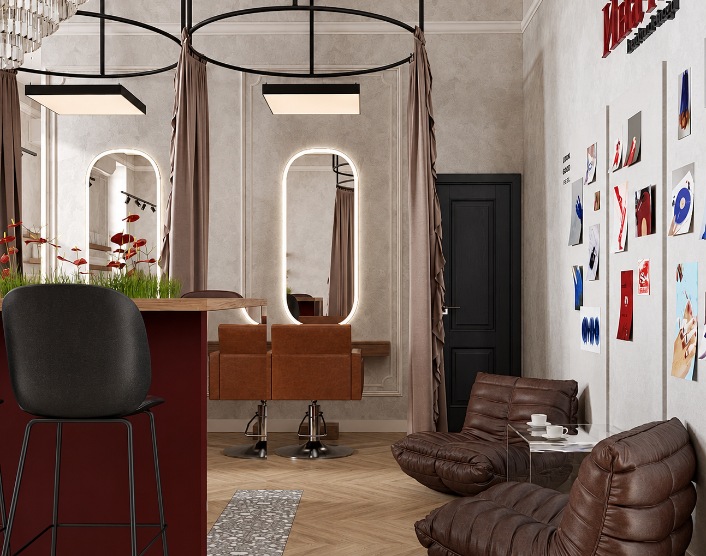
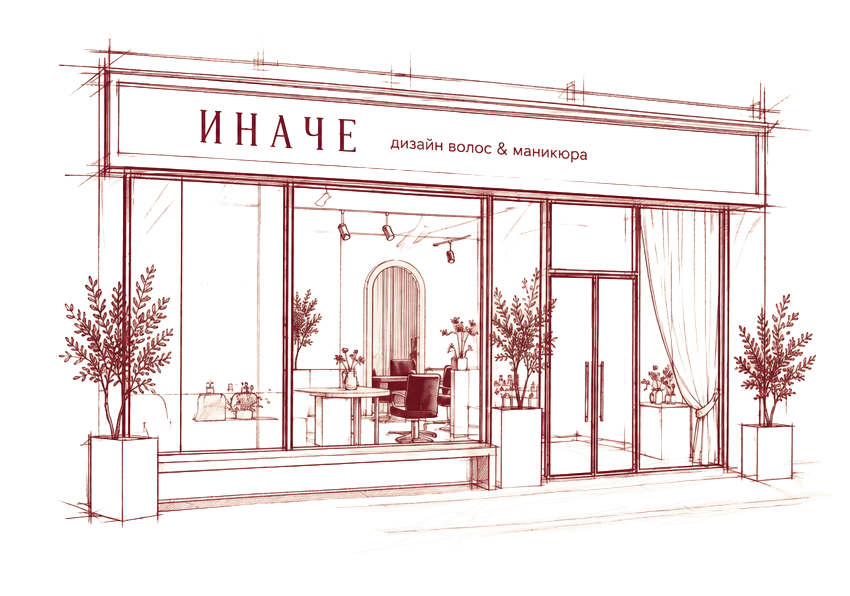
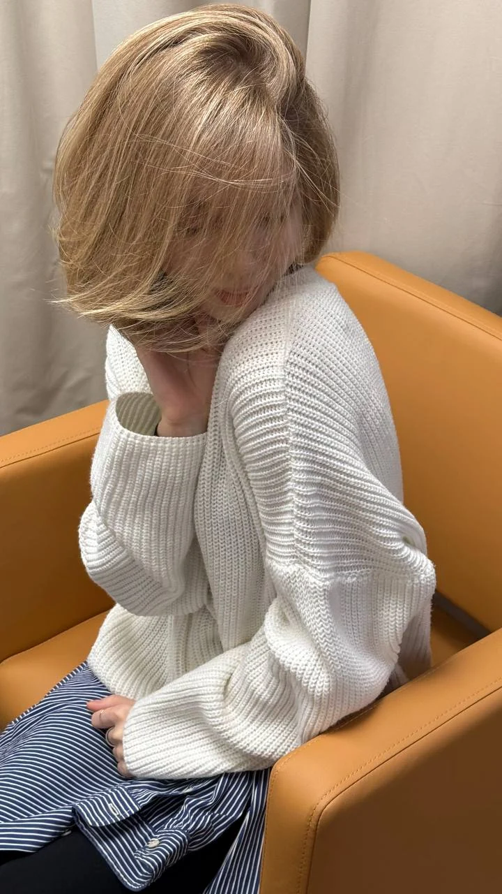
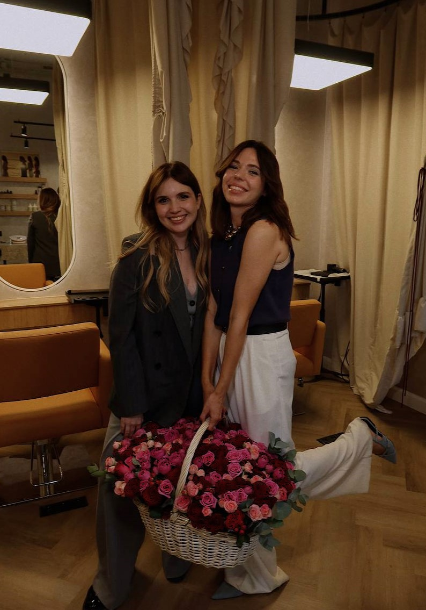
Парижский шик, мода и отдых во время привычных бьюти-ритуалов. Мы собрали их в одном пространстве, чтобы забота о себе стала любимой частью вашего дня.
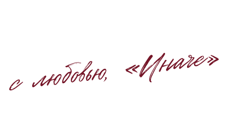
Что сегодня
сделаем для вас?
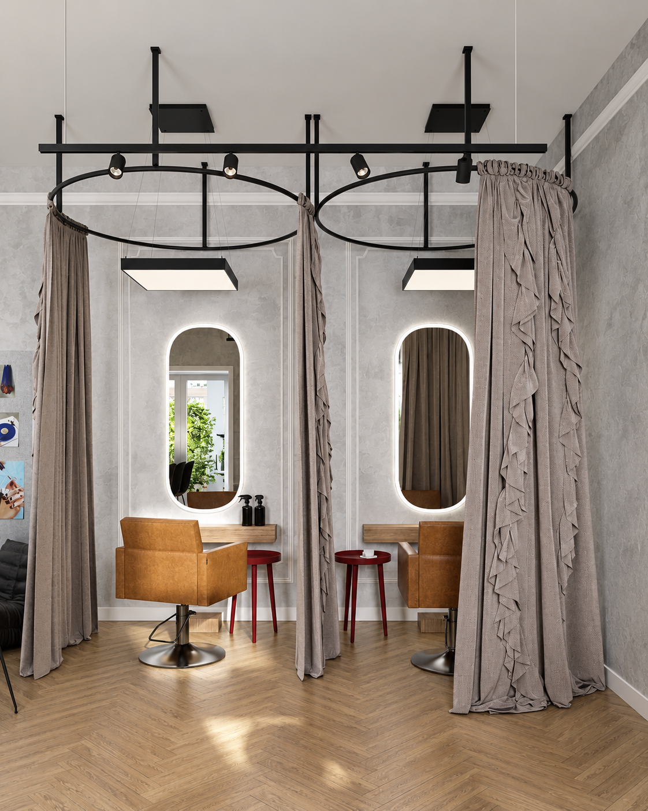
Французские шторы превращают часть салона
в вашу личную hair-капсулу.
Во время услуг по волосам и педикюра мы можем полностью задвинуть шторы. Открытое пространство станет отдельной камерной кабинкой — только вы, мастер и ваши мысли.
Особенно часто мы используем капсулы для SPA-ритуалов: мягкий свет, прикосновения мастера и возможность на время оставить привычный ритм за пределами штор.
Быть частью общего пространства или побыть наедине с собой — выбираете вы.
Записаться к нам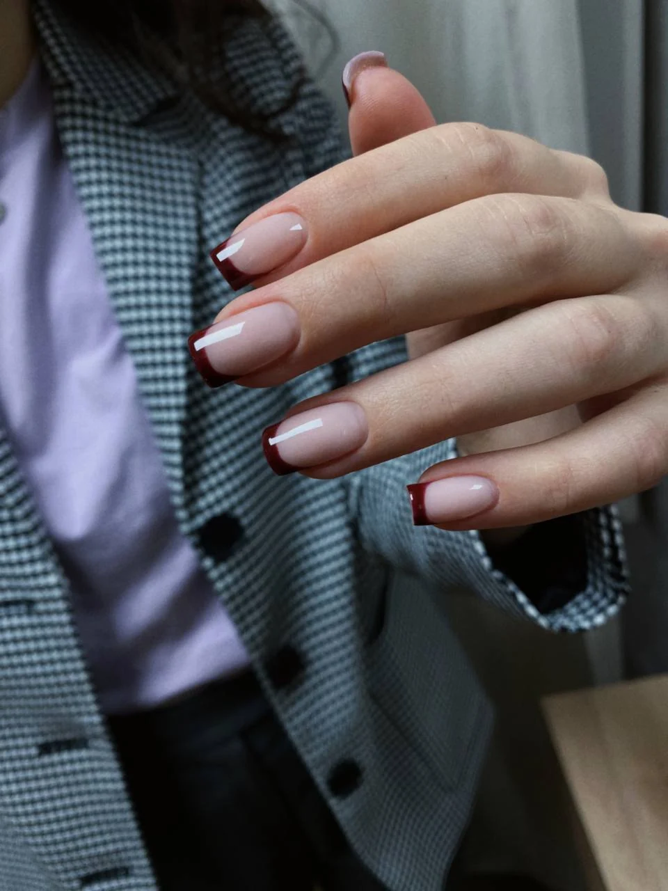
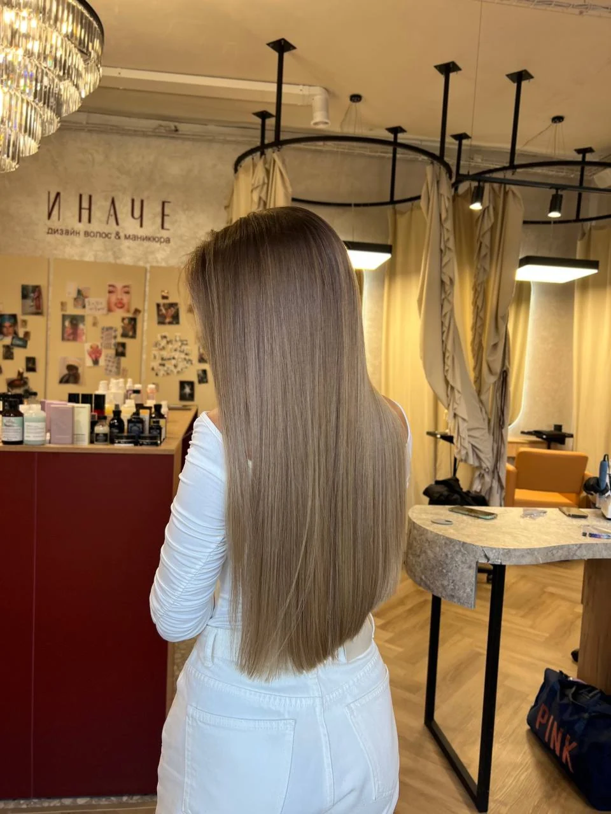
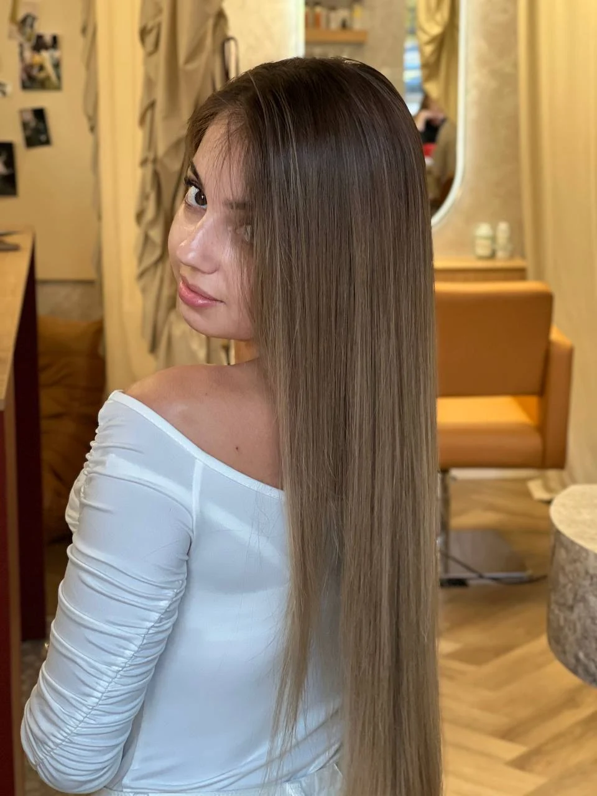
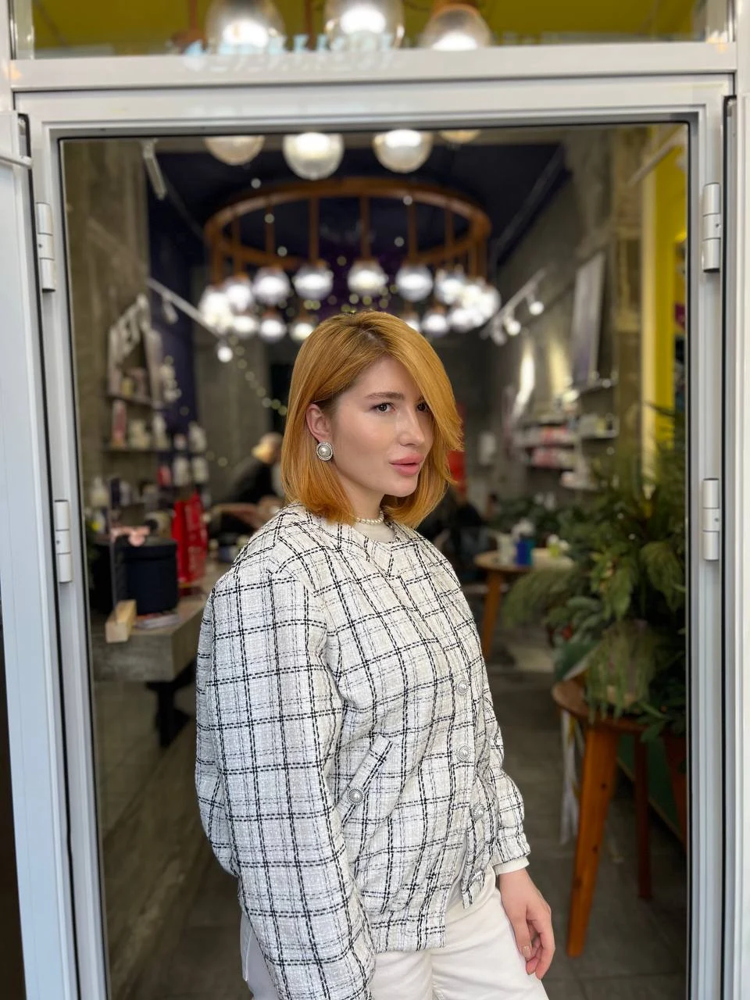
После визита начисляем баллы
на вашу карту лояльности.
Чем больше чек — тем больше кешбэк.
3%
Например, с 5 000 ₽
вернутся 150 баллов
5%
Например, с 12 000 ₽
вернутся 600 баллов
10%
Например, с 15 000 ₽
вернутся 1 500 баллов
1 балл = 1 ₽Копите или списывайте
До 5% стоимости визитаМожно оплатить баллами
90 днейСрок действия баллов
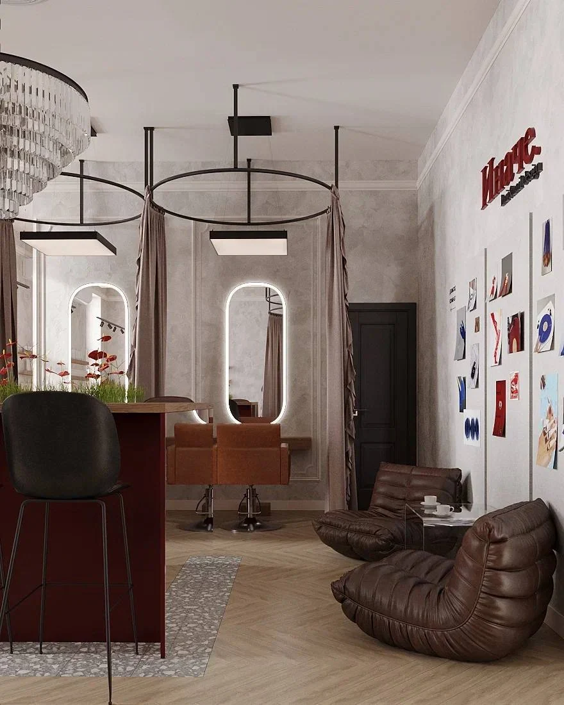
На новый цвет. На свежий маникюр.
На пару часов, которые будут только вашими.
Ежедневно
10:00–20:00